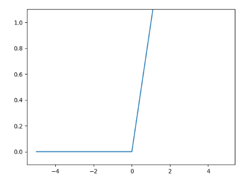

클래스 직접 만들어서 신경망 구현하기(relu,forward,backward)
저번 포스팅 때, 순전파와 역전파 원리를 간단하게 보고, class를 만들어봤습니다. 이번에는 활성화 함수를 넣어 조금 그럴듯한 신경망을 만들어보도록 하겠습니다. 활성화 함수를 사용하지 않고 열심히 신경망만 깊게 쌓기만 하면 깊게 쌓는 의미도 없을 뿐더라 그냥 단층 신경망이라도 봐도 무방합니다. 그렇기 때문에 꼭 넣어주어야 깊게 쌓는 의미가 있습니다.
Relu Class 만들기.
저번 포스팅에서 만들었던 Affine class는 냅두고 Relu(렐루) 클래스를 한번 만들어 보겠습니다. Relu 함수는 예전 포스팅에서 한번 다루었는데 혹시나 약간 개념이 헷갈리거나 다른 활성화 함수에 대해 알고 싶다면 여기를 눌러 참고해주세요.
Relu의 특징은 0이하면 0을 출력하고 0을 넘으면 그냥 그대로 출력하는 비교적 간단하지만 대단히 효율 좋은 활성화 함수이며 그래프로 출력하지만 아래와 같이 출력할 수 있습니다.

그렇기 때문에 함수 구현이나 클래스는 간단하게 아래와 같이 구현할 수 있습니다.
class Relu:
def __init__(self):
self.mask = None
def forward(self,x):
self.mask = (x <= 0)
out = x.copy()
out[self.mask] = 0
return out
def backward(self,dout):
dout[self.mask] = 0
dx = dout
return dx
저번에 만든 순전파와 역전파 클래스를 합쳐서 전체 코드를 보면 아래와 같습니다.
# 활성화 함수
class Relu:
def __init__(self):
self.mask = None
def forward(self,x):
self.mask = (x <= 0)
out = x.copy()
out[self.mask] = 0
return out
def backward(self,dout):
dout[self.mask] = 0
dx = dout
return dx
# 순전파 역전파
class Affine:
def __init__(self,w,b):
self.w = w
self.b = b
def forward(self, x):
out = np.dot(x,self.w)+ self.b
return out
def backward(self,x,out):
dx = np.dot(out,self.w.T)
dw = np.dot(x.T, out)
db = np.sum(out, axis = 0)
return dx,dw,db
위 클래스를 이용하여 2층짜리 순전파 신경망을 만들어보겠습니다.
# input
x = np.array([[1,2]])
# 가중치와 바이어스
w1 = np.array([[1,3,5],[2,4,6]])
w2 = np.array([[1,4],[2,5],[3,6]])
b1 = np.array([1,2,3])
b2 = np.array([1,2])
# 객체화
affine1=Affine(w1,b1)
affine2=Affine(w2,b2)
relu1=Relu()
relu2=Relu()
# 순전파
y1=affine1.forward(x)
out1=relu1.forword(y1)
y2=affine2.forward(y1)
out2=relu2.forword(y2)
print(out2)
순전파를 만들었으니 이번에는 역전파룰 구현해야겠지요? 이미 class안에 함수가 있으니 그대로 불러오면 되겠네요.
# input
x = np.array([[1,2]])
# 가중치와 바이어스
w2 = np.array([[1,4],[2,5],[3,6]])
b1 = np.array([1,2,3])
b2 = np.array([1,2])
# 객체화
affine1=Affine(w1,b1)
affine2=Affine(w2,b2)
relu1=Relu()
relu2=Relu()
# 순전파
y1=affine1.forward(x)
out1=relu1.forword(y1)
y2=affine2.forward(y1)
out2=relu2.forword(y2)
# 역전파
dy=relu2.backword(out2)
dx1,dw1,db1=affine2.backward(y1,dy)
dx1=relu1.backword(dx1)
dx,dw,db=affine1.backward(x,dx1)
print('dx:\n',dx)
print('dw:\n',dw)
print('db:\n',db)
잘 출력되는 것을 확인 할 수 있습니다. 다음 포스팅때는 계속 해서 다른 활성화 함수도 구현해보도록 하겠습니다.